조경산업기사 (2019-03-03 기출문제)
1과목: 조경계획 및 설계
1. 20세기 초 미국의 도시 미화 운동(City Beautiful Movement)과 관련이 없는 것은?
- 미국의 조경가 옴스테드(Frederick Law Olmsted)가 이론적 배경을 만들었다.
- 도시미술(civic art)을 통해 공공미술품의 도입을 추진하였다.
- 전체 도시사회를 위한 단위로서 도시설계(civic design)를 추진하였다.
- 도시개혁(civic reform)과 도시개량(civic improvement)을 추진하였다.
(정답률: 66%)

2. 다음 설명의 ( )안에 적합한 인물은?
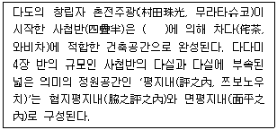
- 소굴원주(小堀遠州)
- 천리휴(千利休)
- 고전직부(古田織部)
- 무야소구(武野紹驅)
(정답률: 65%)
3. 클로드 몰레가 설계한 생제르맹앙레의 정원에서 최초로 사용한 정원세부 수법은?
- 하하(Ha-ha)
- 파르테르(parterre)
- 토피아리(topiary)
- 물 풍금(water organ)
(정답률: 69%)
4. 김조순의 옥호정도(玉壺亭圖)에서 볼 수 없는 것은?
- 옥호동천 바위 글씨
- 별원의 유상곡수
- 사랑마당의 분재
- 사랑마당의 포도가(葡萄架)
(정답률: 65%)
5. 조선시대의 대표적 별서인 소쇄원(瀟灑園)에 대한 설명으로 옳지 않은 것은?
- 계곡에 흘러내리는 임천이 주된 경관자원이다.
- 앞뜰, 안뜰, 뒤뜰과 같은 명확한 공간구분은 없다.
- 소쇄원 경치를 읊은 48영시에는 동물도 표현되었다.
- 명칭은 '구슬과 같은 물소리가 들리는 곳'이란 의미를 갖는다.
(정답률: 65%)
6. 다음 조선 왕릉 중 경기도 남양주시에 소재하고 있는 것은?
- 정릉
- 장릉
- 의릉
- 홍유릉
(정답률: 66%)
7. 소(小) 플리니우스가 남긴 유명한 편지 속에 자세히 소개된 정원은?
- 로우렌티아나장, 토스카나장
- 메디치장, 카렛지오장
- 아드리아나장, 카스텔로장
- 이솔라벨라장, 카프아쥬올로장
(정답률: 59%)
8. 중국 청조(淸朝)의 건륭(乾隆) 12년(1747년)에 대분천(大噴泉)을 중심으로 한 프랑스식 정원을 꾸밈으로써 동양에서는 최초의 서양식 정원으로 알려진 곳은?
- 원명원 이궁
- 만수산 이궁
- 열하이궁
- 이화원
(정답률: 73%)
9. 다음 표는 조경계획의 일반과정을 나타낸 것이다. 빈칸 A에 가장 알맞은 것은?
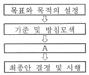
- 경관분석
- 설계서 작성
- 이용 후 평가
- 대안의 작성 및 평가
(정답률: 81%)
10. 조경계획 시 기후는 중요한 요소 중 하나이다. 다음 중 기후가 영향을 주는 사회적 특성에 해당되지 않는 것은?
- 현존 식생
- 전통적인 습관
- 옷을 입는 습관
- 독특한 음식과 식사
(정답률: 69%)
11. 보도의 유효폭은 보행자의 통행량과 주변 토지 이용 상황을 고려하여 결정된다. 보도의 최소 유효폭(A)과 불가피시의 완화기준 적용에 따른 최소 폭(B)의 연결이 맞는 것은? (단, 도로의 구조·시설 기준에 관한 규칙 적용)
- A : 3.5m, B : 3.0m
- A : 3.0m, B : 2.5m
- A : 2.5m, B : 2.0m
- A : 2.0m, B : 1.5m
(정답률: 66%)
12. 「도시공원 및 녹지 등에 관한 법률」에서 정하는 도시공원 중 어린이공원의 표준 규모는?
- 1000 m2 이상
- 1500 m2 이상
- 5000 m2 이상
- 10000 m2 이상
(정답률: 79%)
13. 녹지자연도 등급에 따른 설명이 옳지 않은 것은?
- 1등급 : 해안, 암석 나출지
- 2등급 : 과수원, 묘포장
- 8등급 : 원시림, 2차림
- 10등급 : 고산지대 초원지구
(정답률: 61%)
14. 아파트 단지 계획 중 질서 있는 공간 조형 요소로 가장 부적합한 것은?
- 연속성
- 방향성
- 개별성
- 통일감
(정답률: 85%)
15. 공원 내에 표지판을 설치할 때 고려할 필요가 없는 항목은?
- 재료의 선택
- 장소 선정
- 주변 환경 고려
- 미기후 고려
(정답률: 86%)
16. 색채지각에서 태양광선의 프리즘을 이용한 분광실험을 통해서 나타나는 여러 가지 색의 띠를 무엇이라 하는가?
- 전자기파
- 자외선
- 적외선
- 스펙트럼
(정답률: 92%)
17. 지형의 높고 낮음을 지도 위에 표시하는 것과 같이 기준면을 정하고, 기준면에 평행한 평면을 같은 간격으로 잘라 평 화면상에 투상한 수직투상은?
- 정투상법
- 표고 투상법
- 축측 투상법
- 사투상법
(정답률: 71%)
18. 질적 혹은 양적으로 심하게 다른 요소가 배열 되었을 때 상호의 특질이 한층 강조되어 느껴지는 현상은 어떠한 효과인가?
- 대비
- 대칭
- 평형
- 조화
(정답률: 86%)
19. 1943년 덴마크의 소렌슨(Sorensen) 박사에 의해 시작된 새로운 개념의 공원은?
- 모험공원
- 교통공원
- 장애자공원
- 특수공원
(정답률: 67%)
20. 직선을 긋는데 사용할 수 없는 제도 도구는?
- 평행자
- 삼각자
- T자
- 운형자
(정답률: 91%)
2과목: 조경식재
21. 다음 꽃피는 식물 중 잎보다 꽃이 먼저 피는 식물이 아닌 것은?
- 생강나무
- 자두나무
- 박태기나무
- 철쭉
(정답률: 59%)
22. 자연풍경식 식재 중 강한 개성미는 없으나 대신 유연성이 있어 자연·인공과 같은 이질적인 요소를 조화시키는데 매우 효과적인 식재법은?
- 자연풍경식재
- 집단식재
- 1본식재
- 비대칭적 균형식재
(정답률: 62%)
23. 대칭형이기는 하나 지나치게 면적이 광대한 프랑스식 정원에서는 보스케(Bosquet)가 존재함으로써 두드러지게 강조되는 것은?
- 방사축
- 측축
- 통경축
- 직교축
(정답률: 59%)
24. 지주세우기의 설치요령 중 틀린 것은?
- 연계형은 교목 군식지에 적용한다.
- 단각(單脚)지주는 주간이 서지 못하는 묘목 또는 수고 1.2m 미만의 수목에 적용한다.
- 매몰형은 경관상 중요하지 않은 곳이나 지주목이 통행에 지장을 주지 않는 곳에 적용한다.
- 당김줄형은 거목이나 경관적 가치가 특히 요구되는 곳에 적용하고, 주간 결박지점의 높이는 수고의 2/3가 되도록 한다.
(정답률: 76%)
25. 다음 중 봄에 꽃이 피지 않는 수목은?
- 히어리
- 산수유
- 진달래
- 나무수국
(정답률: 71%)
26. 다음 특징에 해당하는 수종은?
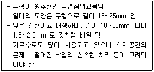
- 삼나무
- 분비나무
- 일본잎갈나무
- 메타세퀘이아
(정답률: 77%)
27. 다음 중 느릅나무과(Ulmaceae)에 해당하지 않는 것은?
- 팽나무
- 센달나무
- 푸조나무
- 느티나무
(정답률: 55%)
28. 원산지는 북아메리카로 차례식재용으로 적합한 수종으로 가지가 짧게 수평으로 퍼지며 잎에 향기가 있고 표면은 녹색, 뒷면은 황록색인 수종은?
- 서양측백나무(Thuja occidentalis)
- 편백(Chamaecyparis obtusa)
- 화백(Chamaecyparis pisifera)
- 실화백(Chamaecyparis pisifera var. filifera)
(정답률: 71%)
29. 중부지방에서 가로수로 사용하기 가장 적합한 수종은?
- 돈나무
- 구실잣밤나무
- 산당화
- 왕벚나무
(정답률: 75%)
30. 아황산가스에 견디는 힘이 가장 약한 수종은?
- 전나무
- 회화나무
- 양버즘나무
- 물푸레나무
(정답률: 59%)
31. 우리나라에 있어서 수평적 삼림분포를 기준으로 난대림, 온대림, 한 대림으로 구분할 때, 난대림에 해당되는 수종은?
- 자작나무
- 잎갈나무
- 감탕나무
- 신갈나무
(정답률: 56%)
32. 굴취 된 수목을 운반할 때 주의사항에 대한 설명으로 틀린 것은?
- 수목과 접촉하는 고형부(固形部)에는 완충재를 삽입한다.
- 대량수송과 비용절감을 위해 가급적 이중적재 등을 통해 이동횟수를 줄인다.
- 비포장도로로 운반할 때는 뿌리분이 충격을 받지 않도록 완충재로 가마니, 짚 등을 깐다.
- 운반 중 바람에 의한 증산을 억제하며 강우로 인한 뿌리분의 토양유실을 방지하기 위하여 덮개를 씌우는 등 조치를 취한다.
(정답률: 85%)
33. 식물생유기의 수분환경에 대한 설명과 그에 따른 식물의 연결이 옳은 것은?
- 부유식물(통발, 부처꽃) : 식물체 전체가 물에 떠있는 식물
- 습생식물(부들, 갈대) : 얕은 물이나 물가에 생육하는 식물
- 소택(추수)식물(고마리, 낙우송) : 주로 토양이 축축한 습지에서 생육하는 식물
- 부엽식물(연꽃, 마름) : 물속을 중심으로 생활하는 식물로 뿌리는 물밑에 고착되어 있고 식물체의 잎은 수면에 떠 있는 식물
(정답률: 65%)
34. 지피식물 중 황색계의 꽃을 피우는 식물은?
- 앵초
- 복수초
- 꽃향유
- 꿀풀
(정답률: 58%)
35. 다음 설명에 해당되는 식물은?
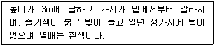
- 흰말채나무
- 황매화
- 쥐똥나무
- 앵도나무
(정답률: 71%)
36. 식물조직의 일부분을 떼어 무기염류 배지에서 인공적으로 배양하여 새로운 식물체로 증식시키는 번식방법은?
- 취목
- 분구
- 조직배양
- 삽목
(정답률: 74%)
37. 각 수종에 대한 특징 설명으로 틀린 것은?
- 전나무 열매는 난상타원형이며, 거꾸로 매달린다.
- 독일가문비 열매는 긴 원주형 갈색이고, 아래로 달린다.
- 주목은 컵모양의 붉은 종의 안에 종자가 들어 있다.
- 구상나무의 열매는 원주형이고, 갈색, 검은색, 자주색, 녹색이 있다.
(정답률: 46%)
38. 다음 중 강조식재가 되지 않는 것은?
- 같은 수관형태의 수목들이 식재되어 있다.
- 단풍나무가 연속적으로 심겨진 가운데 홍단풍이 식재되어 있다.
- 고운 질감의 식물로 식재되어 있는 가운데 거친 질감의 식물이 있다.
- 같은 크기의 관목이 식재된 가운데 좀 더 큰 키의 침엽수가 식재되어 있다.
(정답률: 81%)
39. 소나무(Pinus densiflora Siebold & Zucc.)에 대한 설명으로 틀린 것은?
- 수꽃은 새가지 밑부분에 달리며 타원형이다.
- 수피는 회색이고, 노목의 수피는 흑갈색이며, 세로로 길게 벗겨진다.
- 가을에 종자를 기건 저장했다가 파종 1개월전에 노천매장한 후 사용한다.
- 곰솔 대목에 접을 붙이면 쉽게 많은 묘목을 얻을 수 있다.
(정답률: 59%)
40. 벽면을 식물로 녹화시킴으로써 얻을 수 있는 효과로 가장 거리가 먼 것은?
- 도시경관의 향상
- 방음의 방진효과
- 도심 열섬현상 완화
- 여름철 건물 벽면의 복사열 증진효과
(정답률: 77%)
3과목: 조경시공
41. 암거 배열방식 중 집수 지거를 향하여 지형의 경사가 완만하고 같은 저도의 습윤상태인 곳에 적합하며 1개의 간선 집수지 또는 집수 지거로 가능한 한 많은 흡수거를 합류하도록 배열하는 방식은?
- 빗식(gridiron system)
- 자연식(natural system)
- 집단식(grouping system)
- 차단식(intercepting system)
(정답률: 55%)
42. 철골부재 간 사이를 트이게 한 홈인 개선부를 뜻하는 용어는?
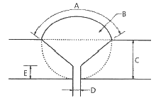
- 가우징(gouging)
- 스패터(spatter)
- 그루브(groove)
- 위핑(weeping)
(정답률: 61%)
43. 건설시공(콘크리트, 벽돌, 용접 등) 관련 설명 중 옳지 않은 것은?
- 콘크리트 비비기는 미리 정해둔 비비기 시간의 3배 이상 계속하지 않아야 한다.
- 벽돌쌓기 시에는 붉은 벽돌에 물이 충분히 젖도록 하여 시공하는 것이 좋다.
- 강우나 강설 시에는 용접작업을 습기가 침투할 수 없는 밀폐된 공간에서 실시한다.
- 콘크리트를 타설한 후 일평균 10℃이상에서 보통 포틀랜드시멘트는 7일간을 습윤 양생기간으로 정한다.
(정답률: 51%)
44. 관목류 식재공사 품셈적용에 관한 기준으로 옳은 것은?
- 수목의 수관폭을 기준으로 하여 적용한다.
- 나무높이가 수관폭 보다 클 때에는 나무높이를 기준으로 한다.
- 나무높이가 1.5m이상일 때에는 나무높이에 비례하여 할증할 수 있다.
- 식재품은 나무세우기, 물주기, 지주목세우기, 손질, 뒷정리 등의 공정을 별도 계상한다.
(정답률: 47%)
45. 모르타르 배합비(시멘트 : 모래)에 관한 설명이 옳지 않은 것은?
- 벽돌 및 블록의 쌓기용 배합은 1 : 3 으로 한다.
- 타일공사의 붙임용 배합은 1 : 2 로 한다.
- 타일공사의 고름용 배합은 1 : 1 로 한다.
- 벽돌 및 블록의 줄눈용 배합은 1 : 2 로 한다.
(정답률: 56%)
46. 다음 중 지형도의 이용법으로 가장 거리가 먼 것은?
- 저수량의 결정
- 노선의 도면상 선정
- 노선의 거리 측정
- 하천의 유역 면적 결정
(정답률: 49%)
47. 지피 및 초화류 식재 공사의 설명으로 틀린 것은?
- 식재 후 지반을 충분히 정지하고 낙엽, 잡초 등을 모아 뿌리 주변에 넣어 식재상을 조성한다.
- 객토는 사양토의 사용을 원칙으로 하나 지피류, 초화류의 종류와 상태에 따라 부식토, 부엽토, 이탄토 등의 유기질토양을 첨가할 수 있다.
- 토심은 초장의 높이와 잎, 분얼의 상태에 따라 다르나 표토 최소토심은 0.3~0.4m 내외로 한다.
- 덩굴성 식물은 식재 후 주요 장소를 대나무 또는 지정재료로 고정한다.
(정답률: 52%)
48. 일반 콘크리트의 슬럼프 시험 결과 중 균등한 슬럼프를 나타내는 가장 좋은 상태는?(오류 신고가 접수된 문제입니다. 반드시 정답과 해설을 확인하시기 바랍니다.)
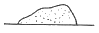
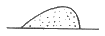
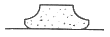
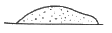
(정답률: 60%)
49. 플라스틱 재료의 일반적인 특징으로 옳지 않은 것은?
- 내수성(耐水性)과 내약품성이다.
- 내마모성이 크며, 접착성도 우수하다.
- 착색이 용이하고, 투명성도 있다.
- 내후성(耐朽性)이 크며, 전기절연성이 양호하다.
(정답률: 51%)
50. 흙(토양)의 기본적인 구성요소가 아닌 것은?(오류 신고가 접수된 문제입니다. 반드시 정답과 해설을 확인하시기 바랍니다.)
- 공기
- 물
- 흙입자
- 유기물
(정답률: 56%)
51. 지상의 측점과 이에 대응하는 평판 위의 점을 같은 연직선이 되는 위치에 있게 하는 작업은?
- 정준
- 구심
- 표정
- 조정
(정답률: 49%)
52. 다음 식생대 호안의 식생매트 관련 설명이 틀린 것은?
- 식생매트 포설 후 현장여건을 검토하여 두께 0.5m 이내로 복토하여 관수한다.
- 비탈면을 평평하게 정지한 후, 하천에 어울리는 종자를 이식 및 파종하고 그 위에 매트를 설치한다.
- 비탈기슭에는 비탈멈춤 및 유수에 의한 세골을 방지하기 위해 돌망태, 사석부설, 흙채움 등으로 조치한다.
- 매트는 비탈 머리, 기슭에서 땅속으로 길이 0.3~0.5m, 폭 0.3m 이상 묻히도록 하고, 양단을 0.1m 이상 중첩하되, 겹치는 방향은 유수의 흐름과 동일하게 아래쪽으로 향하도록 한다.
(정답률: 38%)
53. 공원의 울타리가 외부에 노출된 경우 다음 중 시각적으로 가장 부적당한 것은?
- 철책
- 목책
- 콘크리트블록
- 산울타리
(정답률: 78%)
54. 다음 목재 사용에 대한 장·단점에 대한 설명 중 옳지 않은 것은?
- 목재는 팽창수축이 크다.
- 목재는 열, 음, 전기 등의 전도율이 작다.
- 목재는 비중에 비해 압축 인장강도가 높다.
- 목재는 무게에 비해 섬유질 직각방향에 대한 강도가 크다.
(정답률: 56%)
55. 다음과 같은 네트워크 공정표에서 한계경로의 공기는?
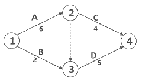
- 6일
- 8일
- 10일
- 12일
(정답률: 71%)
56. 도장공사에 관한 주의사항으로 옳지 않은 것은?
- 도장 장소의 습도를 높게 유지시킬 것
- 직사일광을 가능한 한 피할 것
- 도막의 건조는 매회 충분히 행할 것
- 도막은 얇게 여러 번 도장할 것
(정답률: 71%)
57. 콘크리트 혼화제인 AE제의 사용 목적으로 가장 거리가 먼 것은?
- 시공연도가 증진 효과
- 응결시간의 조절 효과
- 단위수량 감수 효과
- 다량 사용으로 강도 증가 효과
(정답률: 63%)
58. 다음 중 조경공사의 품질관리 사이클 순서로 옳은 것은?
- 계획 → 검토 → 실시 → 조치
- 계획 → 검토 → 조치 → 실시
- 계획 → 실시 → 조치 → 검토
- 계획 → 실시 → 검토 → 조치
(정답률: 55%)
59. 적산의 기준 설명으로 틀린 것은?
- 기본벽돌의 크기는 19cm × 9cm × 5.7cm 이다.
- 1일 실작업시간은 360분(6시간)으로 한다.
- 경사면의 소운반 거리는 수직높이 1m를 수평거리 6m의 비율로 한다.
- 1회 지게 운반량은 보통토사 25kg으로 하고, 삽 작업이 가능한 토석재를 기준으로 한다.
(정답률: 71%)
60. 다음 중 실내조경 공사용으로 사용되는 식재용토로 가장 거리가 먼 것은?
- 펄라이트
- 잡석
- 피트모스
- 질석
(정답률: 62%)
4과목: 조경관리
61. 솔노랑잎벌의 월동 형태로 맞는 것은?
- 알
- 성충
- 유충
- 번데기
(정답률: 53%)
62. 다음 설명의 ( )에 적합한 수치는?
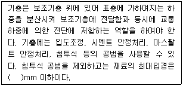
- 40
- 50
- 60
- 100
(정답률: 44%)
63. 나무좀, 하늘소, 바구미 등은 쇠약목에 유인되므로 벌목한 통나무 등을 이용하여 이들을 구제하는 기계적 방법은?
- 식이유살법
- 등화유살법
- 잠복소유살법
- 번식처유살법
(정답률: 51%)
64. 다음 중 도로 등의 포장과 관련된 관리방법으로 옳은 것은?
- 흙 포장의 지반 토질이 점토나 이토이 경우 지지력이 약하므로 물을 충분히 주어 다져준다.
- 차량 통행이 적고 포장면의 균열 정도와 범위가 심각하지 않은 아스팔트 포장은 훼손부분을 4각형의 수직으로 절단한 후 프라임코팅을 한다.
- 콘크리트 슬래브면이 꺼졌을 때는 모르타르 주입이나 패칭공법으로는 보수가 곤란하므로 두껍게 덧씌우기를 실시한다.
- 보도블럭 포장의 보수공사에서는 모래층에 대한 충분한 다짐과 수평고르기가 중요하다.
(정답률: 62%)
65. 전문적인 관리능력을 가진 전문업체에 위탁하는 도급관리 방식의 대상으로 가장 적합한 것은?
- 금액이 적고 간편한 업무
- 연속해서 행할 수 없는 업무
- 관리주체가 보유한 설비로는 불가능한 업무
- 진척 상황이 명확하지 않고 검사하기가 어려운 업무
(정답률: 69%)
66. 다음 중 친환경적 수목 해충 방제방법이 아닌 것은?
- 미량접촉제에 의한 방제
- 성페로몬 물질에 의한 방제
- 유아등 및 포충기를 이용한 방제
- 솔잎혹파리의 유충낙하기 박새 등 포식조류에 의한 방제
(정답률: 68%)
67. 다음 중 건물의 예방보전을 위한 관리 방법으로 볼 수 없는 것은?
- 점검
- 청소
- 보수
- 도장
(정답률: 47%)
68. 토양의 고결이 잔디의 생육에 미치는 영향에 관한 설명으로 틀린 것은?
- 뿌리의 신장을 저해한다.
- 지하부 산소공급이 떨어진다.
- 토양 고결은 잔디 생육에 악 영향을 미친다.
- 투수율과 보수율이 높아져 생육이 좋아진다.
(정답률: 77%)
69. 다음 중 1년을 1사이클로 하는 작업은?
- 청소
- 순회점검
- 전면적 도장
- 식물유지관리
(정답률: 56%)
70. 수목 생장에 영향을 끼치는 저해 요인들 중 상대적 비율이 가장 높은 것은?
- 병해
- 충해
- 불 피해
- 기상 피해
(정답률: 59%)
71. 관리 하자에 의한 사고 내용이 아닌 것은?(오류 신고가 접수된 문제입니다. 반드시 정답과 해설을 확인하시기 바랍니다.)
- 위험물 방치에 따른 사고
- 시설의 노후 및 파손에 의한 사고
- 시설물의 배치 잘못에 의한 사고
- 안전대책 미비로 인한 사고
(정답률: 62%)
72. 우리나라 수경시설물의 하자처리 발생률이 1년 중 가장 높은 기간은?
- 1~2월
- 3~4월
- 7~8월
- 10~11월
(정답률: 56%)
73. 수간 주사(trunk injection)와 관련한 설명으로 옳지 않은 것은?
- 20~30°로 비스듬히 세워서 구멍을 뚫는다.
- 시기는 수액이 왕성하게 이동하는 4~9월이 좋다.
- 솔잎혹파리를 방제하기 위하여 침투성이 좋은 포스파미돈 액제를 우화시기에 주사한다.
- 줄기의 형성층 밖 사부에 영양제를 공급한다.
(정답률: 60%)
74. 대기오염물질로 볼 수 없는 것은?
- NOx
- HF
- SiO2
- SOx
(정답률: 60%)
75. 평균 근로자 수가 50명인 조합놀이대 생산 공장에서 지난 한 해 동안 3명의 재해자가 발생하였다. 이 공장의 강도율이 1.5이었다면 총 근로손실 일 수는? (단, 근로자는 1일 8시간씩 연간 300일 근무)
- 180일
- 190일
- 208일
- 219일
(정답률: 41%)
76. 황(S) 성분이 들어 있는 비료는?
- 과린산석회
- 중과린산석회
- 인산암모늄
- 용성인비
(정답률: 53%)
77. 시비의 효과를 좌우하는 것으로서 식물자체의 흡수율에 영향을 주는 요인으로 볼 수 없는 것은?
- 비료 시용량
- 식물의 종류
- 토질 여건
- 수질 여건
(정답률: 49%)
78. 살포한 약제가 작물에 부착된 후 씻겨 내려가지 않고 표면에 붙어 있는 성질을 가장 잘 나타낸 것은?
- 고착성(tenacity)
- 현수성(suspensibility)
- 비산성(floatability)
- 안정성(stability)
(정답률: 71%)
79. 다음 ( )안에 알맞은 것은?
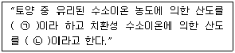
- ㉠ 활산성, ㉡ 치환산성
- ㉠ 잠산성, ㉡ 활산성
- ㉠ 가수산성, ㉡ 잠산성
- ㉠ 활산성, ㉡ 가수산성
(정답률: 62%)
80. 우리나라의 농약의 독성 구분 기준이 아닌 것은?
- 고독성
- 무독성
- 저독성
- 보통독성
(정답률: 53%)
미국의 도시 미화 운동은 도시개혁과 도시개량을 추진하며, 전체 도시사회를 위한 단위로서 도시설계를 추진하였습니다. 이론적 배경으로는 미국의 조경가 옴스테드가 있었습니다. 그러나 도시미술을 통해 공공미술품의 도입을 추진한 것은 이와 관련이 없는 내용입니다.